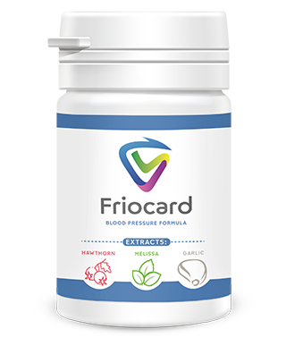

Știri urgente
11.12.2019 | Dobre
Octavian
Vârsta - nu este un obstacol pentru viață! Medicul cardiolog în vârstă
de 87 ani a
împărtășit secretul longevității sale și sănătății excelente
Cunoscutul medic cardiolog român Băluță Andrei s-a pensionat la vârsta de 70 de
ani, deși a
rămas tânăr cu inima și trupul. Este pensionar deja de 17 de ani, iar Casa Națională de Pensii Publice
îl urăște! La acest moment, academicianul are 87 ani, dar se simte ca la 50 de ani.
Dl. Băluță spune că secretul longevității sunt vasele
sanguine. Dacă
acestea sunt curate și sănătoase, poți trăi până la 120 de ani și chiar mai mult și să te simți complet sănătos.
Medicul cardiolog a confirmat pe deplin această afirmație.
La cei 87 ani, Dl. Băluță a primit felicitări de la președinte. O
fotografie la locul
de muncă al Dlui. Băluță.
Reporterul nostru a reușit să ia un interviu de la Dl. Băluță, care a
explicat metoda sa de
curățare a vaselor sanguine ce prelungește viața
— Dle. Băluță, ați afirmat în repetate rânduri că vasele sanguine
curate sunt baza
sănătății. De ce?
vfr. bf e ved
- Simplu. Funcționarea organelor și sistemelor din organism depinde de calitatea circulației sanguine. Circulația sanguină înseamnă livrarea oxigenului și substanțelor nutritive către organele interne, precum și colectarea dioxidului de carbon și a produselor metabolice. În copilărie, adolescență, tinerețe, ne mișcăm mult, vasele sunt noi, elastice, curate -nutriția organelor se petrece la maximum. Cu vârsta, facem mai puțină mișcare, iar vasele noastre încep să se murdărească. Aceasta se petrece din cauza mai multor factori, nu doar dăunători (de exemplu, fumatul, alimentația nesănătoasă, ecologia, modul de viață sedentar), ci și naturali (depunerea de lipide, proces ce se produce în toate organismele).
rfb fevde
Ce înseamnă vase sanguine ”murdare”? Imaginați-vă niște țevi pline de rugină. Ce se întâmplă? Presiunea apei crește, iar apa are gust neplăcut. Același lucru se petrece și cu vasele sanguine. Atunci când se depune pe ele colesterolul sau alte substanțe, presiunea crește ( vasele murdare sunt cauza principală a hipertensiunii!), sângele conține impurități, circulația sanguină este dereglată. În consecință, se produc schimbări în toate organele și sistemele din organism. Chiar și pielea este un anumit sistem.
br b fe vd
Corpul uman începe să îmbătrânească. Dacă aveți grijă să curățați vasele sanguine, aveți șansa să trăiți cel puțin 20 de ani, fără dureri ale organelor sau articulare, iar creierul va funcționa excelent. Cu alte cuvinte, curățarea vaselor sanguine vă poate prelungi viața și sănătatea. Și nu este doar o teorie. Am recomandat această metodă pacienților mei și o practic personal. Toți cei care mi-au ascultat sfatul, i-au depășit pe cei de o vârstă cu ei.
vfr. bf e ved
- Simplu. Funcționarea organelor și sistemelor din organism depinde de calitatea circulației sanguine. Circulația sanguină înseamnă livrarea oxigenului și substanțelor nutritive către organele interne, precum și colectarea dioxidului de carbon și a produselor metabolice. În copilărie, adolescență, tinerețe, ne mișcăm mult, vasele sunt noi, elastice, curate -nutriția organelor se petrece la maximum. Cu vârsta, facem mai puțină mișcare, iar vasele noastre încep să se murdărească. Aceasta se petrece din cauza mai multor factori, nu doar dăunători (de exemplu, fumatul, alimentația nesănătoasă, ecologia, modul de viață sedentar), ci și naturali (depunerea de lipide, proces ce se produce în toate organismele).
rfb fevde
Ce înseamnă vase sanguine ”murdare”? Imaginați-vă niște țevi pline de rugină. Ce se întâmplă? Presiunea apei crește, iar apa are gust neplăcut. Același lucru se petrece și cu vasele sanguine. Atunci când se depune pe ele colesterolul sau alte substanțe, presiunea crește ( vasele murdare sunt cauza principală a hipertensiunii!), sângele conține impurități, circulația sanguină este dereglată. În consecință, se produc schimbări în toate organele și sistemele din organism. Chiar și pielea este un anumit sistem.
br b fe vd
Corpul uman începe să îmbătrânească. Dacă aveți grijă să curățați vasele sanguine, aveți șansa să trăiți cel puțin 20 de ani, fără dureri ale organelor sau articulare, iar creierul va funcționa excelent. Cu alte cuvinte, curățarea vaselor sanguine vă poate prelungi viața și sănătatea. Și nu este doar o teorie. Am recomandat această metodă pacienților mei și o practic personal. Toți cei care mi-au ascultat sfatul, i-au depășit pe cei de o vârstă cu ei.
În acest mod are loc murdărirea treptată a vaselor. Dacă nu ați curățat
niciodată
vasele sanguine și aveți peste 40 de ani, ele conțin multe impurități. Aceasta vă poate afecta sănătatea sau
poate că acest proces deja a început.
— Ce patologii pot provoca vasele sanguine
”murdare”?
v gr v rfvcdcc
- Așa cum am menționat deja, întregul organism suferă. Dar în primul rând, sunt afectate organele și sistemele legate direct de circulația sanguină- sistemul cardiovascular.
rg v frv fe. cdccs
Impuritățile din vasele sanguine pot provoca apariția următoarelor boli:
v gr v rfvcdcc
- Așa cum am menționat deja, întregul organism suferă. Dar în primul rând, sunt afectate organele și sistemele legate direct de circulația sanguină- sistemul cardiovascular.
rg v frv fe. cdccs
Impuritățile din vasele sanguine pot provoca apariția următoarelor boli:
Ateroscleroza
Vasele încetează să-și exercite funcțiile: vasele mici sunt complet înfundate, iar
cele principale conțin depozite mari de colesterol.
Boala cardiacă ischemică
Este cauzată de deficiență regulată de sânge în vasele coronare, care, la rândul
său, se dezvoltă din cauza impurităților din vase.
Accident vascular cerebral
Dereglările de alimentare cu sânge a țesutului cerebral provoacă moartea
terminațiilor nervoase ceea ce duce la pierderea anumitor funcții.
Hipertensiunea
Impuritățile vaselor sanguine provoacă îngustarea lumenului și creșterea tensiunii
arteriale.
Varice
Apare în interiorul organismului, nu doar pe picioare (fapt alarmant pentru sexul
feminin). Hemoroizii sunt o consecință a dilatației venoase.
Tromboza venoasă și arterială
Depunerile de impurități din vasele sanguine formează trombi și produc moartea
vasului, ceea ce poate conduce la moartea unui grup de celule dintr-un organ. Dacă trombul se desprinde
și ajunge în sânge se poate produce blocarea vaselor sanguine ale inimii, atacul de cord, care în 70%
din cazuri se soldează cu decesul.
Această situație ia amploare. Bolile cardiovasculare provoacă de 4 ori mai
multe decese
decât celelalte cauze. Medicii sunt conștienți de acest lucru, știu că este necesară curățarea vaselor, dar din
anumite motive, medicina română o neglijează. Majoritatea medicilor prescriu remedii pentru scăderea tensiunii
arteriale în cazul hipertensiunii. Acestea însă nu sunt menite să vindece, ci au un efect temporar. E necesar ca
vasele sanguine să fie curățate. Apropo, această metodă e practicată de toți oamenii din Occident cu vârsta
peste 35-40 de ani de mai bine de jumătate de secol. Toți pacienții de acolo cunosc despre necesitatea curățării
vaselor. M-am tot întrebat mereu de ce nu se întâmplă la fel și la noi.
му му. вс
— Există simptome care ne fac să ne dăm seama de prezența depunerilor din vasele de sânge?
му. мву
- Sigur că da. Principalele simptome sunt:
му му. вс
— Există simptome care ne fac să ne dăm seama de prezența depunerilor din vasele de sânge?
му. мву
- Sigur că da. Principalele simptome sunt:
- Migrenele
- Dereglările de memorie
- Oboseala cronică
- Insomnia
- Probleme intime
- Tulburări ale vederii și auzului
- Hipertensiunea arterială
- Tulburări de respirație și stenocardie
- Culoarea pală a pielii pe picioare
- Dureri musculare și articulare
Indiferent dacă aveți sau nu unul din aceste simptome, după vârsta de 30 de
ani e necesar să
curățați vasele sanguine cel puțin o dată la 5 ani. În aces caz, veți avea sănătate de fier.
мвц. м ч
Vasele sanguine au capacitatea de a aduna impurități, mai ales la persoanele vârstnice. Pentru aceasta, nu e necesar să mâncați burgeri sau cartofi prăjiți în toată ziua. Chiar și în urma consumului unui cârnaț sau ou prăjit. în vasele sanguine se va depozita o cantitate de colesterol, care în timp se va acumula.
мцв. свы с
— Vă rog să ne povestiți secretul Dvs. de curățare a vaselor sanguine.
vfe. v ef vde c
- Până nu demult, procesul purificării vaselor sanguine îmi lua câteva luni. Colectam plante medicinale, le căutam la piață sau le comandam de pe Internet și preparam infuzie din ele. Acum nu mai e nevoie să mă ocup cu aceasta, deoarece colegii mei de la Institutul de Boli Cardiovasculare au creat un remediu bun și ieftin pentru curățarea vaselor- ””. De fapt, acest produs normalizează tensiunea arterială și tratează hipertensiunea, datorită purificării vaselor. Prin urmare, este excelent pentru scopul nostru.

мвц. м ч
Vasele sanguine au capacitatea de a aduna impurități, mai ales la persoanele vârstnice. Pentru aceasta, nu e necesar să mâncați burgeri sau cartofi prăjiți în toată ziua. Chiar și în urma consumului unui cârnaț sau ou prăjit. în vasele sanguine se va depozita o cantitate de colesterol, care în timp se va acumula.
мцв. свы с
— Vă rog să ne povestiți secretul Dvs. de curățare a vaselor sanguine.
vfe. v ef vde c
- Până nu demult, procesul purificării vaselor sanguine îmi lua câteva luni. Colectam plante medicinale, le căutam la piață sau le comandam de pe Internet și preparam infuzie din ele. Acum nu mai e nevoie să mă ocup cu aceasta, deoarece colegii mei de la Institutul de Boli Cardiovasculare au creat un remediu bun și ieftin pentru curățarea vaselor- ””. De fapt, acest produs normalizează tensiunea arterială și tratează hipertensiunea, datorită purificării vaselor. Prin urmare, este excelent pentru scopul nostru.
Administrat regulat, ””
curăță
chiar
și cele mai înfundate vase sanguine după doar 1-2 săptămâni.
Menționez că acest remediu nu conține chimicale, ci doar extracte concentrate
din plante
medicinale cu proprietăți de curățare a vaselor sanguine. Iată de ce este atât de benefic pentru organism.
Mulți pacienți continuă să îmi ceară sfatul în legătură cu purificarea vaselor sanguine. În ultima perioadă le recomand doar acest produs. Este extrem de eficient.
v fr v frv e
Pe site-ul Institutului de Boli Cardiovasculare au fost expuse statisticile oficiale rezultate din studiile clinice. La ele au participat aproximativ 2 mii de pacienți care au urmat un tratament cu ””.
Rezultatele studiilor:
Mulți pacienți continuă să îmi ceară sfatul în legătură cu purificarea vaselor sanguine. În ultima perioadă le recomand doar acest produs. Este extrem de eficient.
v fr v frv e
Pe site-ul Institutului de Boli Cardiovasculare au fost expuse statisticile oficiale rezultate din studiile clinice. La ele au participat aproximativ 2 mii de pacienți care au urmat un tratament cu ””.
Rezultatele studiilor:
- Normalizarea tensiunii arteriale în decurs de 1-2 zile de la administrarea medicamentului - 99% din cazuri
- Normalizarea ritmului cardiac la finisarea tratamentului - 97% din cazuri
- Curățarea completă a vaselor sanguine de colesterol după tratament - 99% dintre pacienți
- Creșterea eficacității tratamentului bolilor cronice - 99% dintre pacienți
- Ameliorarea stării generale de sănătate - 100% dintre pacienți
- Absența efectelor secundare în timpul tratamentului - 100% dintre pacienți
— Cât costă ”” și de unde îl cumpărăm?
bvgmr rfv f
— Cunoașteți faptul că pensia nu-ți permite să cumperi medicamente scumpe. N-aș putea recomanda un remediu de acest gen. ”” are preț accesibil, iar la acest moment.
v gr bvf vdec
Este principalul medicament din cadrul campaniei pentru combaterea hipertensiunii arteriale. În cadrul ei, orice doritor poate achiziționa ”” cu 50% reducere.
rg f vef. d
Mai multe detalii despre cum să obțineți ”” cu livrare oriunde în țară
Pentru a comanda ”” este necesar:
bvgmr rfv f
— Cunoașteți faptul că pensia nu-ți permite să cumperi medicamente scumpe. N-aș putea recomanda un remediu de acest gen. ”” are preț accesibil, iar la acest moment.
v gr bvf vdec
Este principalul medicament din cadrul campaniei pentru combaterea hipertensiunii arteriale. În cadrul ei, orice doritor poate achiziționa ”” cu 50% reducere.
rg f vef. d
Mai multe detalii despre cum să obțineți ”” cu livrare oriunde în țară
Pentru a comanda ”” este necesar:
- lasa o cerere
- Managerul va lua legătura cu Dvs. pentru a indica adresa de livrare
- După 4-7 zile (termenul de livrare) veți primi ”” la oficiul poștal.
Pentru a menține puritatea vaselor sanguine recomand ca tratamentul să fie
repetat la
fiecare 1-2 ani. Îndeosebi, persoanelor vârstnice. Vă ajută să fortificați sănătatea și să amânați apariția
semnelor de îmbătrânire. Vasele sanguine curate sunt garanția sănătății.
— Dle. Băluță, vă mulțumesc pentru că ne-ați dezvăluit aceste detalii importante în interviul acordat.
În afara interviului, Dl. Băluță mi-a mărturisit că îi place să muncească în grădină și își ajută copiii, care sunt și ei deja la vârsta de pensionare. Soția sa este și ea o persoană longevivă, are 89 de ani. Ambii fac în fiecare an tratamente pentru curățarea vaselor sanguine. Profesorul este de părerea că doar aceasta îi menține în viață.
— Dle. Băluță, vă mulțumesc pentru că ne-ați dezvăluit aceste detalii importante în interviul acordat.
În afara interviului, Dl. Băluță mi-a mărturisit că îi place să muncească în grădină și își ajută copiii, care sunt și ei deja la vârsta de pensionare. Soția sa este și ea o persoană longevivă, are 89 de ani. Ambii fac în fiecare an tratamente pentru curățarea vaselor sanguine. Profesorul este de părerea că doar aceasta îi menține în viață.
ACTUALIZAT 11.12.2019
Important! În legătură cu numărul imens de cereri, suntem nevoiți să limităm
termenul de desfășurare a campaniei! Etapa actuală va avea loc până la de către toți doritorii CU 50%
REDUCERE!